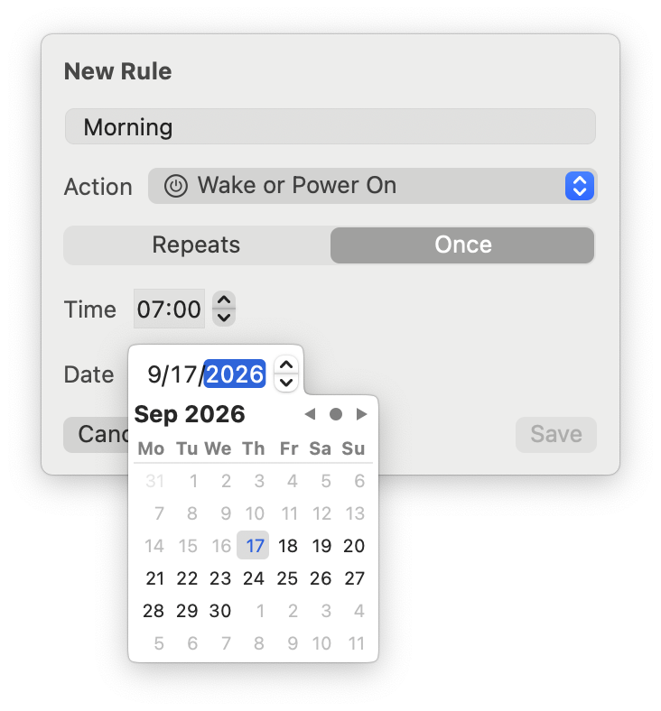

WakeMyMac
Mac'inizi programa göre uyandırın, uyutun veya kapatın — menü barından.



Mac'iniz siz masaya oturduğunuzda uyanık, ihtiyacınız olmadığında kapalı olmalı. macOS eskiden tam da bunu programlamanıza izin veriyordu — sonra Apple o ayarı kaldırdı.
WakeMyMac onu geri getiriyor, üstelik eski tek kural sınırını da kaldırıyor. Her hafta içi sabah iş için uyansın, gece yarısı uyusun, erken bir uçuş için bir kereliğine açılsın. Menü barında sessizce durur ve programa kendi başına uyar — kimse oturum açmamışken bile.
Kurulum
brew tap muarifer/tap && brew install --cask wakemymac
Açtıktan sonra panelden Install'a tıklayın, ardından WakeMyMac'i Sistem Ayarları → Genel → Giriş Öğeleri'nde onaylayın. macOS bunu bir kez sorar, çünkü uyuyan bir Mac'i uyandırmak sistem düzeyinde izin gerektirir.
Neler yapar
- Sınırsız kural: uyandır, aç, uyut, kapat veya yeniden başlat
- Haftanın istediğiniz günlerinde tekrarlı kurallar ya da tek bir tarihe tek seferlik kurallar
- Sonraki olaya canlı geri sayım
- Kimse oturum açmamışken de çalışır — zamanlama yeniden başlatmalara dayanır
- Yalnızca kendi kurduğu olaylara dokunur, diğer araçlar çalışmaya devam eder
Bilinmesi gerekenler
WakeMyMac Mac'inizi siz başında değilken kapatabilir ve yeniden başlatabilir. macOS, kaydedilmemiş işi olan bir uygulama varsa kapatmayı erteler; yine de zamanlanmış kapatmayı gerçek bir kapatma gibi görün ve işinizi kaydedin. Kapalı bir dizüstünün güvenilir şekilde açılması için adaptöre bağlı olması gerekir.